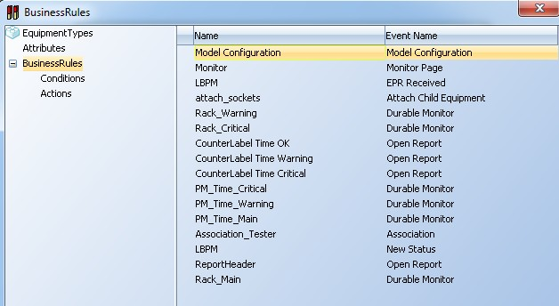
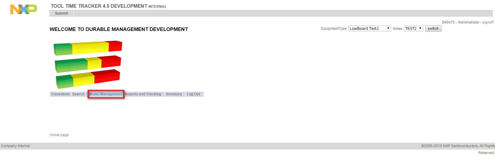
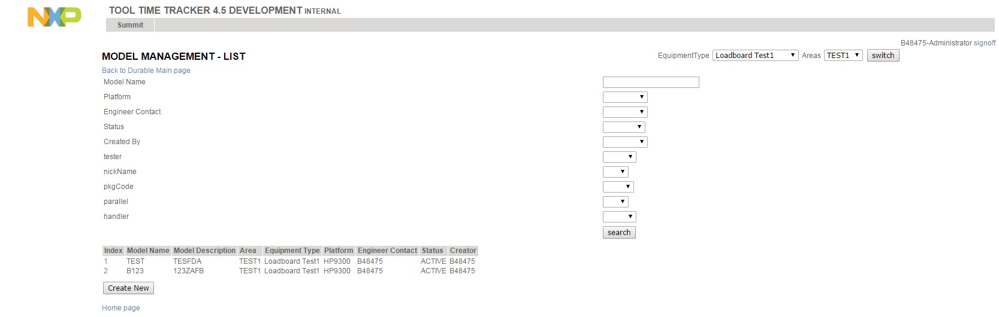
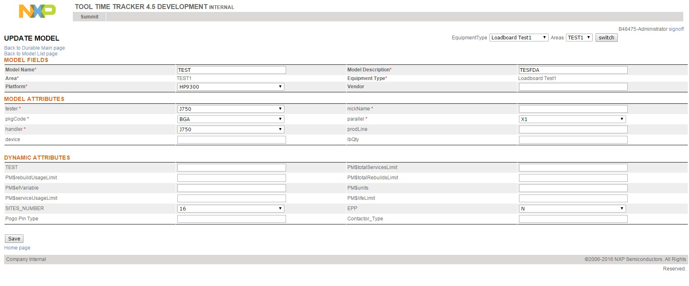
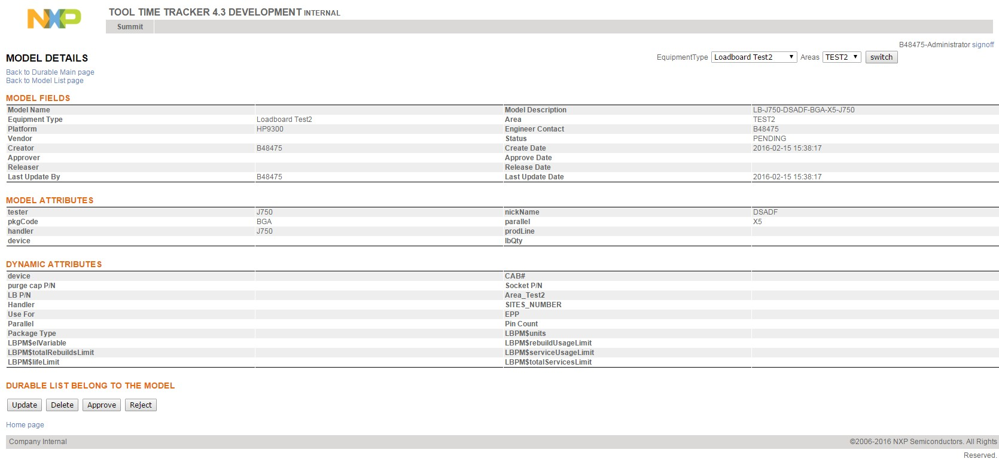
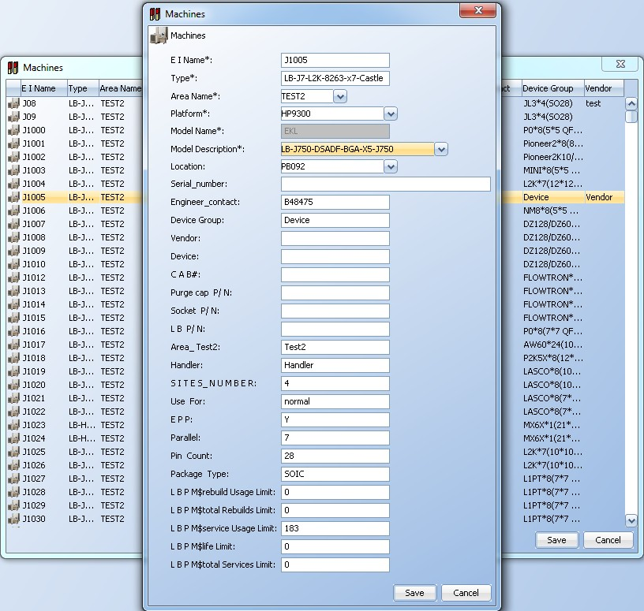

Since release 4.6 version onwards TTT includes a model management module, it allows user to manage durable models. Model is the prototype of durables, it defines a list of attribute values and all the durables that belong to this model will inherit the values. The durables with the same model will share the same attribute values.
The "Model Configuration" event has been added to setup the business rule for model management. More details on the busines rule setup are in the Durable Management Administration - Business rule section.
|
Approval Process Type |
Model Status |
Available Actions |
|---|---|---|
| No Approval | ACTIVE | UPDATE,RETIRE |
| RETIRED | DELETE,UPDATE,ACTIVATE | |
| 1-STEP Approval | PENDING | DELETE,UPDATE,APPROVE,REJECT |
| ACTIVE | UPDATE,RETIRE | |
| RETIRED | DELETE,UPDATE,ACTIVATE | |
| 2-STEP Approval | PENDING | DELETE,UPDATE,APPROVE,REJECT |
| APPROVED | UPDATE,Trigger Alert Email,RELEASE | |
| REJECTED | DELETE,UPDATE | |
| ACTIVE | UPDATE,RETIRED | |
| RETIRED | DELETE,UPDATE,ACTIVATE |

Once the business rule and actions are configured by the administrator the model management is displayed in the durable main page.
The model management menu displays the model list page, the user can see all the models according to the equipment type and area selected during the login. This page allows to filter the models by the model attributes. When the user has the privilege to create models a CREATE button is displayed. The index number is a link to the details of the model.
When a model is created the user needs to enter the values of the attributes, the fields with an asterisk are mandatory. When a model is created if the approval process is enabled the status of the new model will be PENDING, otherwise it will be in ACTIVE status.
There are fields that are are common to all the models, these fields are: model_name, model_description, equipment_type, area, Platform, Vendor.
The business rule for model management defines if a field is mandatory or optional, the details are in the durable management administration – business rule section.
The model inherits the dynamic attributes from the equipment type.
The update page allows to change any model attribute. All the durables that belong to this model are displayed at the bottom. When a model is updated the updated values are overwritten in the durables selected.
The details page displays all the model attributes: common attributes, dynamic attributes. The action buttons in the toolbar vary according to the current status and the applicable actions, the details are in the model status section.
When a durable is created or updated the user must select a model, the fields that are defined in the model will be automatically filled.
